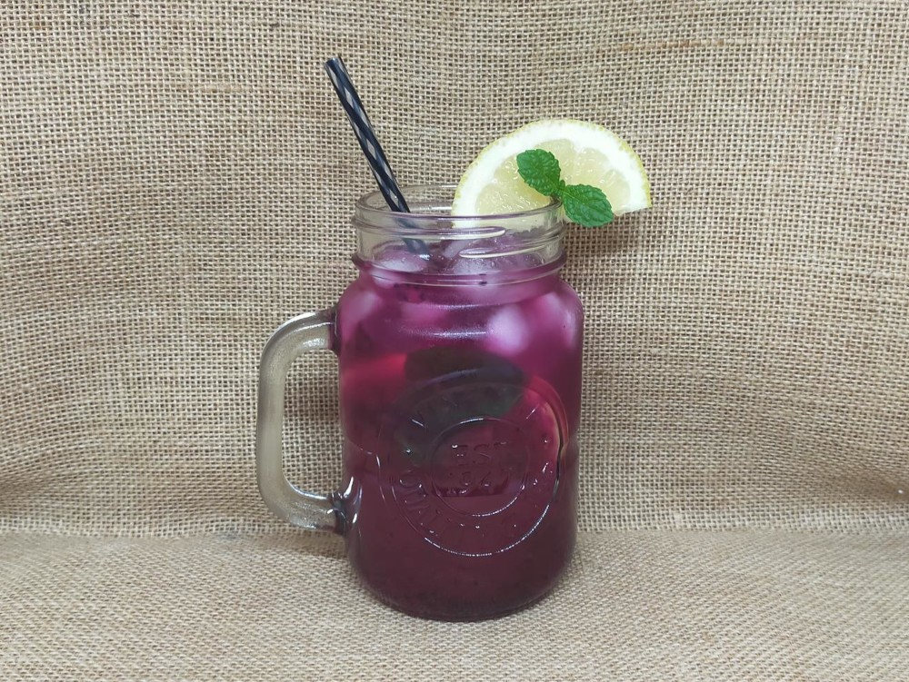

Recipes
While dragon fruit are great eaten fresh, it’s always fun to try using them in cooking, especially if you end up with more than you can eat. I like cooking with red-fleshed dragon fruit as the vibrant colour and seeds speckled through make any dessert really pop, and the flavour adds yet another element. This page is a refined version of any dragon fruit recipes I consider worth making again, something I have only just begun to tap into.
Dragon Fruit Cheesecake
Credit: Bush to Creek Dragon Fruit
 Ingredients:
Ingredients:
- 1/4 cup water
- 1 tbsp gelatine powder
- 250 g sweet biscuits
- 100 g melted butter
- 500 g softened cream cheese
- 2/3 cup caster sugar
- 1-2 red dragon fruit diced (350 to 400 g of flesh)
- 300 ml thickened cream
- toppings as desired (e.g., more dragon fruit of different colours)
- Line the bottom of a 25 cm diameter cake pan with baking paper.
- Crush the biscuits in between baking paper with a rolling pin then mix in the butter.
- Spread the mixture across the base of the cake pan and refrigerate while preparing the filling.
- Slowly dissolve the gelatine powder in the water, stirring continuously. You may need to heat the water to increase dissolution.
- Using beaters, mix the softened cream cheese, sugar, and dragon fruit until combined. Mix in the cream, then gradually add the gelatine mixture.
- Pour the mixture over the base then refrigerate until set (overnight works well).
- Add toppings if desired.
Dragonade (Dragon Fruit Lemonade)
Inspiration: Grafting Dragon Fruit

Ingredients:
- 1 cup sugar
- 1 cup room temperature water
- 1 cup lemon juice
- 1 cup dragon fruit, diced
- Approx. 6 cups of cold water, ice
- Mint leaves, sliced lemon
- Use a fork to crush the dragon fruit in a bowl until it is mostly liquid.
- Combine equal parts sugar and water in a saucepan. Stir to dissolve the sugar and bring to the boil. The mixture should be syrupy. Set aside.
- Mix the syrup, lemon juice, and dragon fruit in a large jug.
- Dilute as desired by adding cold water and ice, then mix in the mint leaves. Serve with slices of lemon.